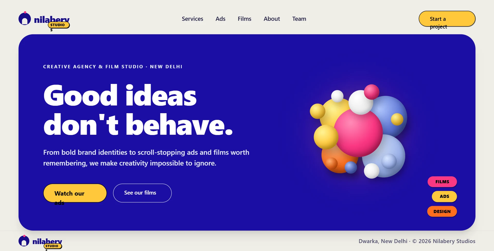

nilaberry studios • Website Design • 2026
AI makes the designs.
Who makes the decisions?
The website was ready. I wasn’t convinced.
AI gave me a great starting point for the nilaberry studios website, but I wasn’t entirely convinced by the result. Because generating a design is one thing. Knowing what to change, what to keep, and why is another.

- Domain
- Website Design
- Focus
- AI-Assisted Design